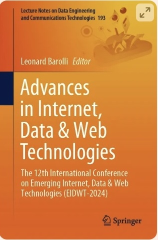
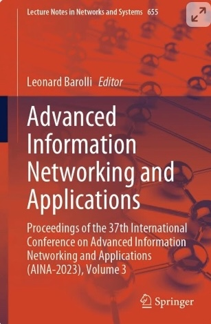
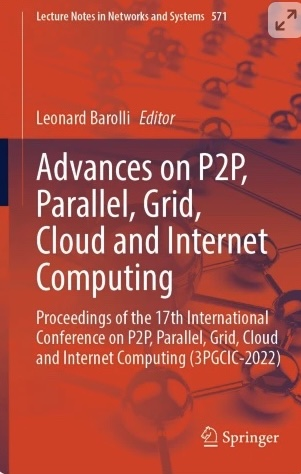

I am Erasmo,
a computer scientist
& cybersecurity
specialist based
in Naples.
About
I'm 23 years old and I hold a Bachelor's degree in Computer Science (L-31) from the University of Naples Federico II, Department of Electrical Engineering and Information Technologies. I am currently pursuing a Master's degree in Computer Science (LM-18) with a specialization in Cybersecurity at the University of Salerno, Department of Informatics. Additionally, I am a student in the Senior Cybersecurity Specialist program at Cyber Hackademy @ UNINA, a training initiative developed in partnership with Federico II and Accenture aimed at forming experts in advanced cybersecurity topics. I'm passionate about Offensive Security and Red Teaming and I'd like to explore and learn more about this world. Since 2022, I have been collaborating with a research group at Federico II, working on topics such as VANETs, autonomous vehicles, smart parking systems, and intelligent traffic management, and I have had the opportunity to publish papers for Springer.
Download CVWords of Wisdom
Education
Department of Electrical Engineering and Information Technology, University of Naples: "Federico II"
Bachelor of Science in Computer Science L-31
September 2020 - July 2024
Designed to provide students with a solid basic training and mastery of the scientific-technological methods and content necessary for a rapid entry into the world of work in the field of information technology. The training includes theoretical and methodological knowledge that enables graduates to update themselves independently throughout their careers in an ever-evolving discipline such as Computer Science. Acquired skills in programming, algorithms, computer architectures and operating systems, deepened through numerous laboratory courses. The educational path also provides for the acquisition of knowledge in related and interdisciplinary areas, with a significant number of credits reserved for laboratory courses and the opportunity for educational internships in companies, research organizations and public administration facilities.
Scientific High School "Vincenzo Cuoco - Tommaso Campanella"
Scientific High school diploma
September 2015 - June 2020
IT-Security Education
Cyber Hackademy @ UNINA
Master in Cybersecurity
January 2025 - Present
Training program on advanced topics in the field of cybersecurity, with particular reference to techniques and protocols for network security, cloud infrastructure, IoT ecosystems, “Offensive Defense” methodologies, the use of modern Machine Learning techniques for the analysis of large masses of data for security purposes, and the use of Generative Artificial Intelligence for the automation of attack and defense techniques in the cyber domain.
Department of Informatics, University of Salerno
Master of Science in Computer Science LM-18, Information Security Curriculum
September 2025 - Present
This degree course is designed to provide advanced training in information security issues, both in theoretical and applied aspects. The curriculum in Information Security aims to train professionals with in-depth skills in protecting information systems, addressing topics such as: cryptography, network security, vulnerability analysis, digital identity management, web application security and data protection regulations.
Recent Publications
Here are some of my publications I have done lately. Feel free to check them out.
-
Paper presenter at the EIDWT 2024 - Springer BookAnalysis and Development of a New Method for Defining Path Reliability in WebGIS based on Fuzzy Logic and Dispersion Indices
-
Conference paper EIDWT 2024 - Springer BookEnergy Sharing System Among Vehicles on a Vehicular Network
-
Conference paper AINA 2023 - Springer BookA Parking System Based on Priority Scheme
-
Paper presenter at the 3PGCIC 2022 - Springer BookA Resource Allocation Technique for VANETs Inspired to the Banker’s Algorithm
Abstract
When planning a trip, we wish to receive a precise itinerary, taking into account various factors such as traffic, distance, types of roads. However, we often have to deal with unreliable and inaccurate information. Evaluating the reliability of a route is a crucial aspect to improve the quality of navigation services and guarantee the user an experience that is not only effective but also efficient in terms of cost and travel time. The problem was approached with an innovative solution, which uses fuzzy logic and dispersion indices to measure variations in the traffic situation at different times of the day and on different days of the week, with tests carried out on real routes collected by the Google Maps platform API.
- WebGIS
- Fuzzy Logic
- Dispersion Indices
Abstract
In today’s mobility landscape, characterised by an accelerated transition towards electric vehicles, significant challenges emerge related to the management of battery recharging. This paper proposes a solution for energy sharing between electric vehicles, inspired by the effectiveness of wireless charging technologies for smartphones and integrating the use of VANET networks. Through communication techniques such as V2V and V2G, we aim to develop a system that not only alleviates charging issues, but also promotes more sustainable mobility and optimised use of energy resources.
- VANETs
Abstract
The way the vehicles are placed in a parking space partitioned into parking slots reachable through internal routes means that the available space is not used at best of its capacity. In this paper, a solution model is proposed, adopting a chequered parking layout, which aims at optimizing the available surface and, consequently, increasing the capacity in terms of available parking slots. To this aim, an isomorphism with the game of fifteen is found and a solution is proposed.
- Smart Parking
- Game of Fifteen
Abstract
With the fast growth of the number of vehicles on our roads, the traffic congestion problem is becoming an issue in big cities. This work is inspired by a known algorithm, the banker’s algorithm, used in operating systems to handle the resource allocation to processes. By following this lead, we treat vehicles like processes making requests and roads as resources to be allocated, and we provide an algorithm to manage the vehicle distribution over the available paths so to reduce the traffic congestion.
- Banker's Algorithm
- VANETs
- Operating Systems
- Smart Traffic Management
Get In Touch
I love to hear from you. Whether you have a question or just want to chat about tech & it-security — shoot me a message.